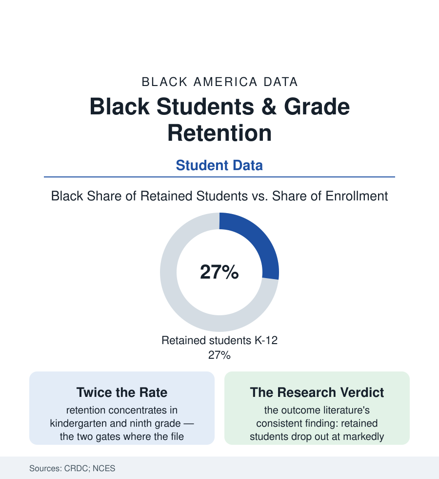

Black Education
Held Back: Grade Retention and the Black Student's Extra Year
Black students are retained in grade at roughly twice the white rate — a practice the research ties to dropout far more than to recovery. The retention file.

Somewhere in America's elementary schools tonight, a disproportionate share of the children repeating a grade are Black: the Civil Rights Data Collection's retention counts show Black students held back at roughly twice the white rate, making up around a quarter or more of all retained students from about a sixth of enrollment. Grade retention is the system's oldest remediation — and the research literature's most consistent verdict against an intervention. This article reads the extra year's data.
Where the Holding Happens
The retention file has two gates, and the data keep them distinct: the kindergarten-first-grade gate (the youngest children — boys disproportionately, Black boys most of all in the CRDC rows — held for 'readiness,' a judgment the early-childhood file shows sorting by the same developmental yardsticks whose cultural calibration the gifted file questioned; the redshirting mirror — affluent families choosing delay as advantage at the front door while the system imposes it as remedy at the same door) and the ninth-grade gate (the credit system's cliff: the freshman who fails two courses and is reclassified a freshman again — the 'ninth-grade bulge' the enrollment data show swelling and then draining into the dropout file across the following years, the single most retention-dense and attrition-dense grade in the American data). Between the gates, the middle grades' social-promotion debates play out in policy cycles the state data track (the third-grade reading laws — retention statutes tied to reading benchmarks adopted across the South and Midwest in the recent legislative waves, their exemption and good-cause machinery deciding whose child the mandate actually holds — the early evaluations showing the held-for-reading cohorts disproportionately Black and poor, the policy's stated targets and its incidence the same children). The predictors behind the counts are the record's usual machinery — the absenteeism file's missed weeks, the funding file's counselor-less buildings, the reading data's early gaps — retention standing, in the causal analyses, less as a cause than as the system's signature on a failure already accomplished upstream.
What the Extra Year Buys
The outcome research is the file's center of gravity, and it is unusually settled for education science: the matched-comparison literature (students of the same scores and backgrounds, one retained, one promoted) finds the retained student behind within two years on achievement, and ahead on every risk the system measures — the dropout analyses (Chicago's consortium studies and the national panels) putting the retained student's dropout risk at multiples of the promoted peer's, the ninth-grade retainees' most of all — the age-grade mismatch itself (the seventeen-year-old sophomore among fifteen-year-olds) operating as an exit mechanism the transcript then certifies. The alternatives' data form the constructive half of the file: the intensive-tutoring trials' effect sizes (the strongest in the intervention literature — the daily, in-school, two-to-one tutoring that moves reading and math by months per year in the randomized studies, at costs the retention year's per-pupil spend roughly matches — the same money, the opposite sign), the summer and extended-learning evaluations, the promotion-with-support models the districts that abolished social promotion's twin — retention — adopted in its place (the early-grade reading laws' better implementations pairing the benchmark with the intervention money, their retention rows falling as the tutoring rows rose in the implementing states' own reports). And the parent's side of the desk deserves its row in the data: the retention decision arrives, in the family surveys, wrapped in the language of gift ('the gift of time,' 'a year to mature') that the private redshirt market sells as advantage — a framing the evidence supports for the chosen, resourced delay and contradicts for the imposed one, the difference being everything the cumulative-advantage file is about: a year is a gift when it comes with more, and a sentence when it comes with the same again.
Reading the Retention Data
Twice the rate, a settled research verdict, and a price tag equal to the remedy that works: grade retention is the education section's clearest case of the system paying full fare for the intervention its own evidence condemns — and billing the year to the child's transcript. The CRDC publishes the counts each cycle. They wait, like the children, for the policy to catch up with the research.
More in Black Education
Black Educational Attainment: High School Parity, the College Gap
About 89 percent of Black adults hold a high school diploma and one in four holds a bachelor's degree or higher — the attainment ladder, the college completion gap, and the generational trend.
Historically Black Colleges and Universities: Enrollment and Degrees
More than 100 HBCUs enroll roughly 290,000 students and award about one in six Black bachelor's degrees — an outsized share from a small sector. The federal education data.
Black College Enrollment: 2.4 Million Students
About 2.4 million Black students are enrolled in American colleges — nearly two-thirds of them women. The NCES enrollment data by sector, level, and trend.
Source: U.S. Department of Education Civil Rights Data Collection; National Center for Education Statistics; Consortium on Chicago School Research and national retention-outcome studies.